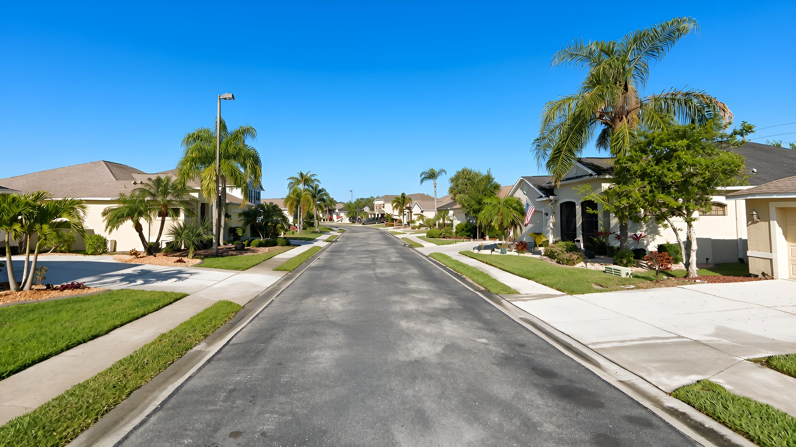

Draft preview for review. Not published. Images shown from local copies.
Florida Wind Mitigation Inspection: The One Report That Can Cut Your Premium

Punta Gorda & Charlotte County, FL · Insurance
A wind mitigation inspection is a short visit that produces one of the most valuable pieces of paper a Florida homeowner can have.
Florida requires insurers to offer discounts for features that reduce hurricane wind damage. The insurer will not guess whether your house has them. A qualified inspector has to document them on a state form, with photos, and that form is what the discount is based on.
This guide walks through the 2026 version of the form, item by item, so you know what the inspector is looking for. For the bigger picture on premiums, see our guide to Florida homeowners insurance cost in Punta Gorda.
The short version
The form: OIR-B1-1802, the Uniform Mitigation Verification Inspection Form. Rev. 04/26 is required for inspections on or after April 1, 2026.
The payoff: Discounts on the windstorm part of the premium. Homes built to the 2001 Florida Building Code or later qualify for at least 68 percent off that portion.
The shelf life: Up to five years if nothing material changes.
Free option: My Safe Florida Home offers free inspections for eligible homesteaded homes.
In this guide
01What the inspection isAnd why it matters02The 9 items on the form2026 version03Who can sign itLicenses that qualify04How the discount worksWindstorm only05Getting the most from itPrep checklist06FAQs6 answersPart 01
What a wind mitigation inspection is
A documented list of your home's wind-resistant features.
A wind mitigation inspection is a visit, usually including the attic, where a qualified inspector records the home's building code era, roof covering, roof deck attachment, roof-to-wall connection, roof shape, secondary water resistance, and opening protection on form OIR-B1-1802, with at least one photo or document for each feature claimed.
Under section 627.0629, Florida Statutes, insurers must offer actuarially reasonable discounts, credits, or other rate differentials for fixtures and construction techniques that reduce windstorm loss. The Office of Insurance Regulation adopted the uniform form so every insurer reads the same evidence. Insurers must also send a Notice of Premium Discounts for Hurricane Loss Mitigation, form OIR-B1-1655, with each new policy and at each renewal.
This matters in Charlotte County because so many homes are older. The Census Bureau's American Community Survey for 2020-2024 shows 64.4 percent of the county's housing units were built before 2000, before the 2001 Florida Building Code took effect. Those homes can still earn credits, but only for features the inspector can actually verify.
Source: Florida Office of Insurance Regulation, wind mitigation resources; Florida Department of Financial Services, Premium Discounts for Hurricane Loss Mitigation; U.S. Census Bureau, ACS 2020-2024, Charlotte County.
Part 02
The 9 items on the 2026 form
Each one asks for the weakest condition on the house, not the best.
The 2026 form covers 1 building code, 2 region, 3 roof slope, 4 roof covering, 5 roof deck attachment, 6 roof-to-wall attachment, 7 roof geometry, 8 sealed roof deck or secondary water resistance, and 9 opening protection. Items 5, 6, and 9 ask for the weakest form found on the house.
| # | Item | What the inspector records |
|---|---|---|
| 1 | Building code | Whether the home was permitted under the 2001 and 2004 Florida Building Code, the 2007 or later code, or neither. Homes built in 2002 or 2003 need a permit application dated after March 1, 2002. |
| 2 | Region | Design wind speed for the location, based on ASCE 7-22. |
| 3 | Roof slope | The slope that covers at least two-thirds of the main roof area. |
| 4 | Roof covering | Each covering type, with a permit application date or a Florida Building Code or Miami-Dade product approval number. Coverings with a roofing permit on or after March 1, 2002 can qualify. |
| 5 | Roof deck attachment | The weakest attachment of the plywood or OSB sheathing: nail size and spacing, or a concrete deck or rated spray foam. |
| 6 | Roof-to-wall attachment | The weakest connection between roof framing and walls: toenails, clips, single wraps, double wraps, or structural. |
| 7 | Roof geometry | Hip roof (no other roof shapes over 10 percent of the roof perimeter), flat roof on larger buildings, or other. |
| 8 | Secondary water resistance | Whether the roof deck is sealed, for example with a fully adhered underlayment, taped deck seams, or a double layer of underlayment. Standard underlayment alone does not qualify. |
| 9 | Opening protection | The weakest protection on every window, door, sliding door, skylight, and garage door, from rated impact products down to none. |
Source: Florida Office of Insurance Regulation, form OIR-B1-1802 (Rev. 04/26).
The three items that usually matter most
Item 6
Roof-to-wall
Clips and wraps hold the roof to the walls in high wind. Toenails alone are the weakest answer. The inspector needs to see them in the attic or have documentation.
Tip
Clear a path to the attic hatch
Item 7
Roof shape
A hip roof slopes down on all sides. The state's discount guide lists roof shape as one of the features that can earn a credit.
Tip
Porch roofs attached only at the fascia are not counted
Item 9
Openings
Every glazed opening must be protected to get the top answers. One unprotected window or garage door can lower the whole category.
Tip
Keep product approvals and receipts
The form also says openings that need replacement do not qualify for wind mitigation rate differentials, regardless of other features.
Part 03
Who can sign the form
Only certain licenses qualify, and false forms are a crime.
Under section 627.711(2), the form may be signed by a Florida home inspector with the required hurricane mitigation training and a proficiency exam, a certified building code inspector, a licensed general, building, or residential contractor, a professional engineer, a professional architect, or another person the insurer recognizes as qualified.
Most of these inspectors must do the inspection personally. Licensed contractors and professional engineers may have a qualified direct employee perform it, but they remain responsible for it. The form warns that anyone who knowingly or through gross negligence provides a false or fraudulent form can be investigated by the state's insurance fraud bureau and face licensing action or criminal prosecution.
Source: Form OIR-B1-1802, inspector certification section; Florida Department of Financial Services, mitigation notices, inspections and forms.
Part 04
How the discount works
It reduces the wind part of the bill, not the whole bill.
Wind mitigation discounts apply only to the windstorm coverage of the policy. Homes built in compliance with the 2001 Florida Building Code or later are automatically eligible for a minimum 68 percent discount on the windstorm portion, according to the Department of Financial Services, and other features can add more.
68%
Minimum windstorm discount for homes built to the 2001 code or later
5 yrs
How long a completed form can be valid
9
Items on the 2026 form
Apr 1, 2026
Rev. 04/26 form required from
The exact dollar amount depends on your insurer's filed rates and how much of your premium is wind. The DFS guide suggests asking your agent how much a specific upgrade would save before you spend money on it. Your OIR-B1-1655 notice, sent with every new policy and renewal, gives an example of the possible discounts.

Waterfront or inland, the same nine items decide the wind credits.
Source: Florida Department of Financial Services, Premium Discounts for Hurricane Loss Mitigation.
Part 05
Getting the most from your inspection
A little prep keeps credits from being marked unknown.
Before the inspection, gather the roof permit or product approval, any window, door, or shutter product approvals, and the original building permit date if the home was built in 2002, 2003, 2007, or 2008. Make the attic reachable, and check whether the seller already has a valid form.
Ask first
Buying? Ask the seller for an existing wind mitigation form. If it is less than five years old and nothing material changed, it may still be usable.
Find documents
Roof permits and building permits can be found through Charlotte County's permitting records, and the Property Appraiser's record card shows the year built.
Clear access
An inspector who cannot reach the attic may have to answer unknown or no attic access for roof deck and roof-to-wall items.
Send it in
Give the completed form to your agent or insurer and confirm the credits show on the declarations page.
Check free help
If the home is your homestead, see whether My Safe Florida Home can provide the inspection at no cost.
Researching a house before an offer? Our guide to the Charlotte County Property Appraiser site shows where to find year built, flood zone, and sales history in a couple of minutes.
Source: Charlotte County residential permits; Section 215.5586, Florida Statutes, My Safe Florida Home.
Part 06
Wind mitigation questions, answered
What is a wind mitigation inspection in Florida?
An inspection that documents a home's wind-resistant features on the state's Uniform Mitigation Verification Inspection Form, OIR-B1-1802. Insurers use the form to apply the windstorm discounts Florida law requires them to offer.
How long is a wind mitigation inspection good for?
Up to five years, as long as no material changes have been made to the structure and no inaccuracies are found on the form.
Which form is used in 2026?
Form OIR-B1-1802 (Rev. 04/26) is required for inspections on or after April 1, 2026. Inspections before that date may use the earlier version of the form.
Who can sign a wind mitigation form?
A home inspector licensed under section 468.8314 with hurricane mitigation training and a proficiency exam, a certified building code inspector, a licensed general, building, or residential contractor, a professional engineer, a professional architect, or another person the insurer recognizes as qualified.
Do wind mitigation discounts apply to my whole premium?
No. According to the Florida Department of Financial Services, the discounts apply only to the windstorm coverage of the policy.
Can I get a wind mitigation inspection for free?
Possibly. My Safe Florida Home offers free hurricane mitigation inspections for eligible site-built, owner-occupied, homesteaded single-family homes and townhouses.
Related Reading
Planning a move? Start with our Moving to Punta Gorda guide, then browse current listings.
Also: Waterfront buying guide · Condo buyer checklist · How we work with buyers
Buying a home in Charlotte County?
We help customers line up insurance documents early, so the quote at closing has no surprises. Call or text The Helgemo Team at (941) 770-2275.
The office is at 320 Cross Street, Punta Gorda, Florida 33950. You can also meet Brian Helgemo or read more about the team.
Sources: Florida Office of Insurance Regulation, Form OIR-B1-1802 (Rev. 04/26); Florida Office of Insurance Regulation, Wind Mitigation Resources; Florida Department of Financial Services, Premium Discounts for Hurricane Loss Mitigation; Florida Department of Financial Services, Mitigation Notices, Inspections and Forms; Section 215.5586, Florida Statutes; U.S. Census Bureau, American Community Survey 2020-2024, Charlotte County; Charlotte County residential permits. This article is general information, not insurance or legal advice. Ask your insurance agent how a specific feature affects your premium.